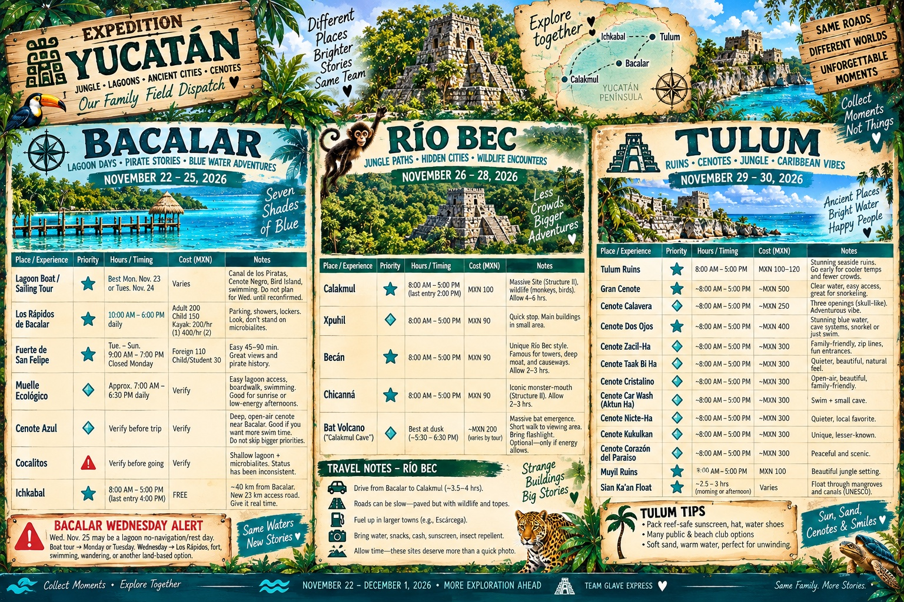
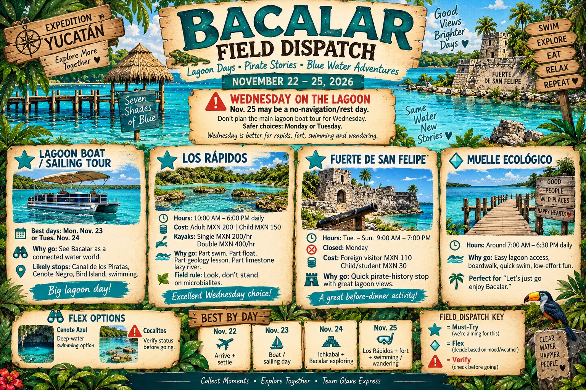
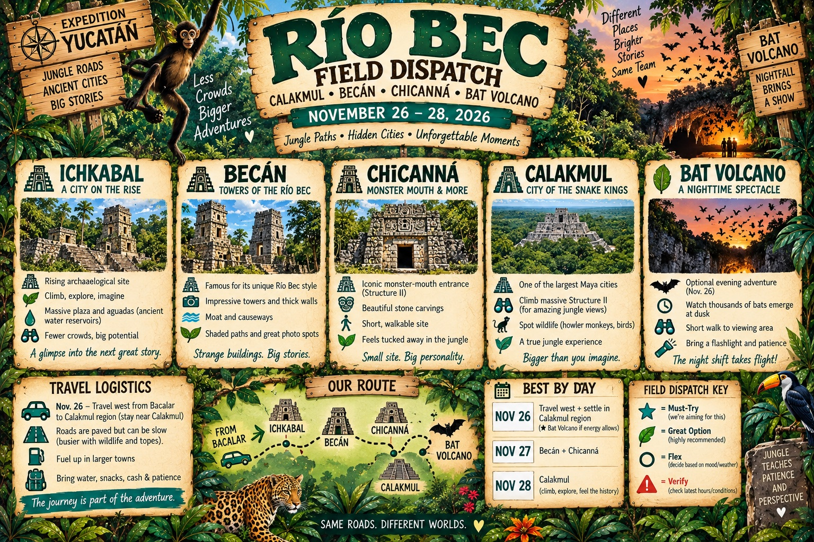
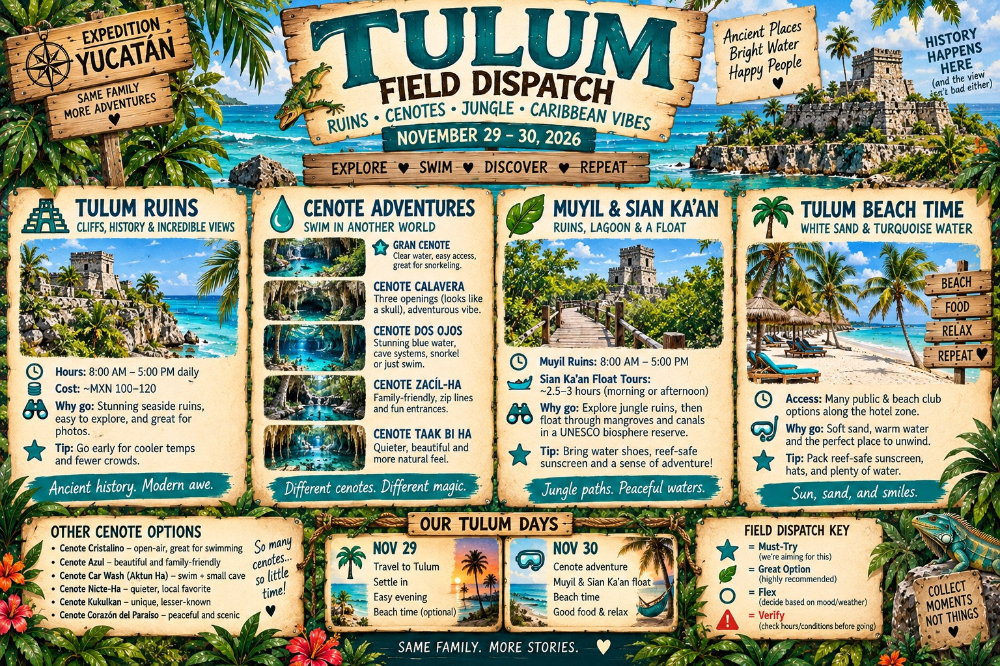

Your complete trip control board.
Bacalar, Río Bec/Calakmul, Tulum, cenotes, priorities, timing, costs, and quick-use notes are all on this single poster.

Tap the poster to view the full-size version and zoom in on individual regions and details.
Bacalar
NOV 22–25
⚠️ Wednesday, Nov. 25: lagoon navigation may be resting. Main boat/sailing day should be Monday or Tuesday. Wednesday is ideal for Los Rápidos, the fort, swimming, or wandering.

Lagoon days, pirates, rapids, fort time, and flexible water adventures.
⛵
Big Lagoon DayBoat / sailing tour
💦
Float DayLos Rápidos
🏴☠️
History HourFort San Felipe
Easy Water TimeMuelle Ecológico
Nov 22Arrive + settle
Nov 23Boat / sailing
Nov 24Ichkabal + explore
Nov 25Rapids + fort
🌿 Río Bec + Calakmul
NOV 26–28

Jungle roads, monster-mouth architecture, the Snake Kings, and one glorious bat wildcard.
🏰
BecánDitch • towers • Structure I
🐲
ChicannáMonster Mouth • Structure II
🐍
CalakmulSnake Kings • Structure II • wildlife
🦇
Bat VolcanoOptional arrival-evening bonus
🦇 Bat Volcano Decision
Still have energy around 4 PM on arrival day?
Nov 26Travel west + maybe bats
Nov 27Becán + Chicanná
Nov 28Calakmul day
🌴 Tulum Region
NOV 29–30

Cenotes, Muyil, Sian Ka'an, Caribbean views, and enough flexibility to follow the mood.